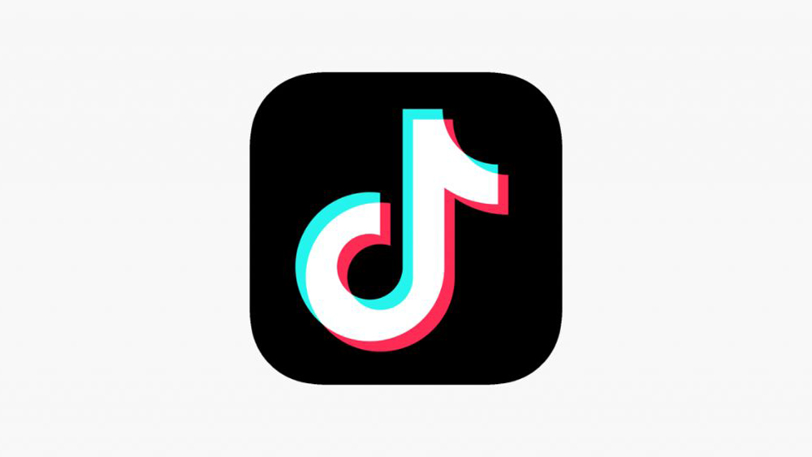

אני מקווה שאף רשת חברתית לא תתבע אותי כי אין לי שקל.
אז אחרי עוד סיבוב ברשתות החברתיות (כן, חזרתי ברוב טיפשותי 🙃), הגעתי למסקנה שצריך לנהל פה פינת מתמודדים חדשה: הרעל החברתי.
(למי שתוהה אין לי טיקטוק. יש לי רק אינסטגרם, פייסבוק פיקטיבי, ולינקדאין… עליו נרחיב בפוסט אחר, כי זה עולם בפני עצמו של תארים וניסיון עבודה מופרך 🤓).
מה קורה בכל רשת?
-
אינסטגרם: כולם שם תמיד נראים כאילו חייהם הם חופשת קבע במלדיביים. חיוכים לבנים, קוקטיילים על חוף, זוגות בהילוך איטי. האמת? חצי מהתמונות צולמו לפני שנים, הקוקטייל זה ספרייט עם קש, והזוג נפרד שלושה ימים אחרי הצילום. ובינתיים אני? תוהה לעצמי מה הדרך הקלה ביותר להתעשר בלי לעבוד עד המוות.

-
פייסבוק: הרשת שהיית אמורה להיכנס אליה רק כדי לשמור על קשר עם בני דודים מדרגה רביעית או להציץ באירועי יום הולדת. בפועל? זה הפך לדיון אינסופי על פוליטיקה, חיסונים וגבולות 67. את רק רצית מתכון לעוגת גבינה, ופתאום את באמצע קרב מילולי של 300 תגובות בין אנשים שנשמעים כאילו הם כותבים מהבונקר.

- טיקטוק: ממלכה של סרטונים "ספונטניים" שצולמו אחרי 83 טייקים ותאורה של אולפן חדשות. כולם שם סטנדאפיסטים, דוגמנים או רקדנים מקצועיים. אגב, הסרטון הכי מושקע יקבל 15 צפיות . 
- לינקדאין: פה אני רק אגיד בקצרה: המקום היחיד שבו כולם מנכ"לים של עצמם עם תואר ב"מצוינות ניהולית". פירוט מלא יבוא בפוסט נפרד, כי יש פה מספיק חומר לסטנדאפ שלם 🎤.
והקטע הכי רעיל?
שכולנו יודעים שזה לא מציאותי ועדיין חוזרים לגלול, כאילו מישהו שם מחלק פרסים על התמדה.
סיכום:
הרשתות החברתיות הן אחלה אם בא לך בלוף מצולם בפילטר או לייקים מדודות רחוקות. אבל בשביל הנפש? עדיף לקחת חופש. כי החיים האמיתיים הרבה יותר שפויים כשלא משווים אותם לפיד פיקטיבי ומבויים.